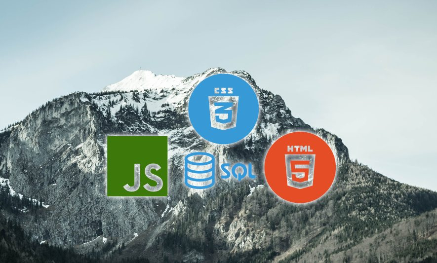

The mountain of full stack
The distant view
From the outside, web development seems like an ever-easier enterprise: there is always a new web site constructor website, domain names grow cheaper, and "no-code" is a familiar buzzword. Yet at the same time, where once having a personal website was a necessity, many individuals and business now opt for a social media page instead. The explanation is simple: the things you do need a website for are growing more complex and the web dev staff rosters of big companies grow bloated. From web apps to online storefronts, the number of expected features has grown far beyond the humble beginnings of the WWW. It is a credit to UI designers that the average web user doesn't need a manual for every new site.
The steep upwards climb
An aspiring full-stack web developer doesn't have the luxury of only dealing with the pleasant front-end, they must oversee the entire enormous stack. Once the sheer number of interacting frameworks, langauges, and libraries is distinguished, it's hard not to wonder how any website ever gets made at all. Much of this is due to the web's history, ancient HTML gradually getting a new coat of CSS paint and the bells and whistles of JavaScript and SQL, forcing to constantly juggle multiple distinct technologies. Obviously, as the websites grow more complex, so must the tech used to create them - even just keeping the documentation up-to-date is a task for hundreds of people.
The crowded peak
The horde of existing and aspiring developers along with the ever-increasing demand for more have an upside: there are plenty of didactic resources and specialised communities. Many get outdated almost as soon as they are posted, while others are merely watered-down versions of the offcial specs, but there is almost certainly an existing answer to any web dev question or at least someone to ask. In that spirit, this website is a brief overview of the available useful materials.